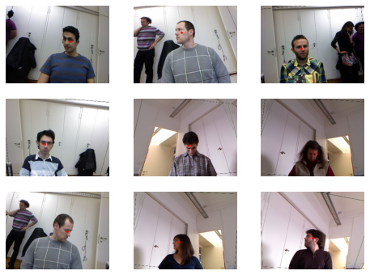
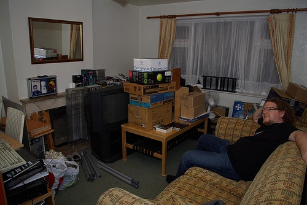
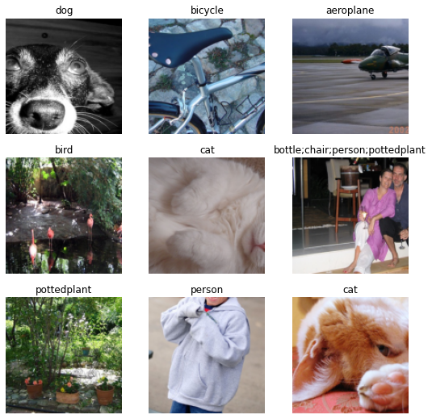
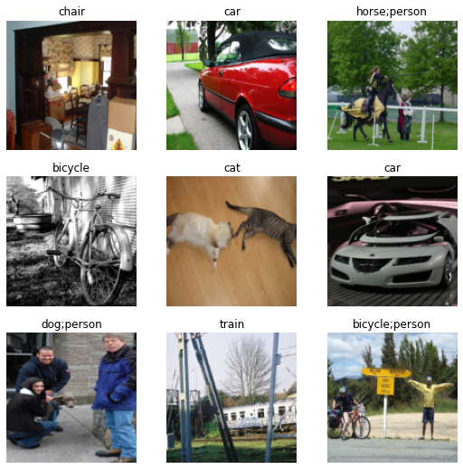
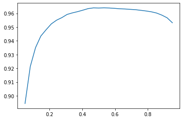
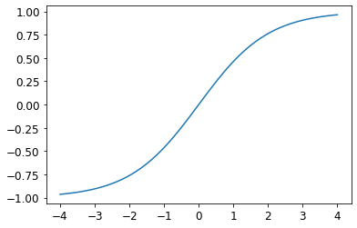
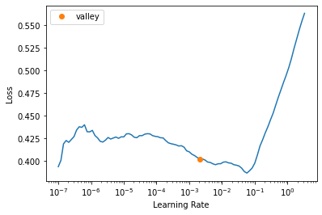
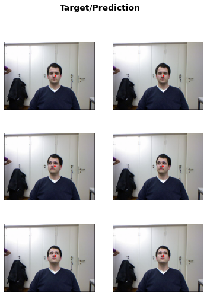

November 22, 2025 · Computer Vision · by Daniel Jordan Viray

! pip install -Uqq fastbook
import fastbook
fastbook.setup_book()
from fastbook import *
This notebook covers two types of computer vision AI models: multi-label classification and regression. For the multi-label classification, I trained a model that can detect multiple categories (or none) from an image. For the regression model, I trained a model that can classify the center points of faces in images (i.e., predict point coordinates (numbers) from images).
This notebook explores multi-label classification and regression computer vision AI models.
Download data:
from fastai.vision.all import *
path = untar_data(URLs.PASCAL_2007)
Check contents of path:
path.ls()
(#8) [Path('/root/.fastai/data/pascal_2007/test.json'),Path('/root/.fastai/data/pascal_2007/test.csv'),Path('/root/.fastai/data/pascal_2007/segmentation'),Path('/root/.fastai/data/pascal_2007/valid.json'),Path('/root/.fastai/data/pascal_2007/train'),Path('/root/.fastai/data/pascal_2007/test'),Path('/root/.fastai/data/pascal_2007/train.csv'),Path('/root/.fastai/data/pascal_2007/train.json')]
Read contents of path/train.csv via pandas df:
Within the "train" data set, there is an is_valid column which if a flag for a validation data set.
df = pd.read_csv(path/'train.csv')
df.head()
| fname | labels | is_valid | |
|---|---|---|---|
| 0 | 000005.jpg | chair | True |
| 1 | 000007.jpg | car | True |
| 2 | 000009.jpg | horse person | True |
| 3 | 000012.jpg | car | False |
| 4 | 000016.jpg | bicycle | True |
See contents of the test (holdout) data set:
df_test = pd.read_csv(path/'test.csv')
df_test.head()
| fname | labels | |
|---|---|---|
| 0 | 000001.jpg | dog person |
| 1 | 000002.jpg | train |
| 2 | 000003.jpg | sofa chair |
| 3 | 000004.jpg | car |
| 4 | 000006.jpg | pottedplant diningtable chair |
Images are split into train and test data sets. Eg., 001-004 = valid, 005 = train, 006 = valid, 007 = train, etc.
Problem: A DataFrame is basically just a table of information. But AI models train on mini-batches of tensors. So we need a pipeline that transforms DataFrame -> individual training items -> mini-batches of tensors -> DataLoaders (that feeds into AI model).
The DataBlock API is fastAI's tool for constructing that pipeline.
Defenitions:
Dataset: A single tuple of (input data, output data/label) DataLoader: Mini-batch of tuples (input data, output data/labels) stacked into a tensor.
Datasets: Training + Validation Dataset DataLoaders: Training + Validation Dataloader
Construct a DataBlock:
dblock = DataBlock()
The underlying code for a DataBlock looks something like this:
# dblock = DataBlock(
# blocks=(input data type, output/label data type), # as blocks
# get_x = how to obtain the input data,
# get_y = how to obtain the input data),
# splitter = how to split the data into train and valid data sets # splits randomly by default
# )
Construct DataSets by passing in DataFrame into DataBlock:
dsets = dblock.datasets(df)
Check training + validation split of the datasets:
len(dsets.train),len(dsets.valid)
(4009, 1002)
# get x and y from train dataset
x,y = dsets.train[0]
x
fname 002844.jpg
labels train
is_valid False
Name: 1427, dtype: object
y
fname 002844.jpg
labels train
is_valid False
Name: 1427, dtype: object
Note that the same row is returned twice, once for x and once for y. Because we haven't yet specificed of columns in the dataframe should be used for x and y yet.
But we need to use 'fname' for x and 'labels' for y.
def get_x(df): return df['fname']
def get_y(df): return df['labels']
dblock = DataBlock(get_x = get_x, get_y = get_y)
Now we will obtain tuples with (fname/input data, label/output data)
dsets = dblock.datasets(df)
x,y = dsets.train[0]
x,y
# note that dataset order can change
('006162.jpg', 'aeroplane')
But we want the actual file path in the x element, and the (multiple) categories (as a list) in the y element:
def get_x(r): return path/'train'/r['fname']
def get_y(r): return r['labels'].split(' ') # turns categories separated by list into list, since there can be more than one category
dblock = DataBlock(get_x = get_x, get_y = get_y)
dsets = dblock.datasets(df)
x,y = dsets.train[4]
x,y
(Path('/root/.fastai/data/pascal_2007/train/001309.jpg'),
['bicycle', 'person'])
For the blocks parameter, we now have to use ImageBlock for x, and MultiCategoryBlock for y (instead of CategroyBlock used previously, which only allows for one category):
dblock = DataBlock(blocks=(ImageBlock, MultiCategoryBlock),
get_x = get_x, get_y = get_y)
dsets = dblock.datasets(df)
x,y = dsets.train[0]
x, y
(PILImage mode=RGB size=500x334,
TensorMultiCategory([0., 0., 0., 0., 0., 0., 0., 0., 0., 0., 0., 0., 0., 0., 1., 0., 0., 1., 0., 0.]))
x

y
TensorMultiCategory([0., 0., 0., 0., 0., 0., 0., 0., 0., 0., 0., 0., 0., 0., 1., 0., 0., 1., 0., 0.])
Note that for MultiCategoryBlock, the labels are one-hot encoded values. This is because PyTorch requires tensors that are all of the same length.
Let’s check what the categories represent for this example (we are using the convenient torch.where function, which tells us all of the indices where our condition is true or false):
# y element of first element in the train data set
dsets.train[0][1]
TensorMultiCategory([0., 0., 0., 0., 0., 0., 0., 0., 0., 0., 0., 0., 0., 0., 1., 0., 0., 1., 0., 0.])
# position where category == 1 (in a tuple)
torch.where(dsets.train[0][1]==1.)
(TensorMultiCategory([14, 17]),)
# position where category == 1 (not in a tuple)
torch.where(dsets.train[0][1]==1.)[0]
TensorMultiCategory([14, 17])
idxs = torch.where(dsets.train[0][1]==1.)[0]
dsets.train.vocab[idxs]
(#2) ['person','sofa']
Therefore, the image above is classified as a 'person' and as a 'sofa'.
Full list of categories:
dsets.train.vocab
['aeroplane', 'bicycle', 'bird', 'boat', 'bottle', 'bus', 'car', 'cat', 'chair', 'cow', 'diningtable', 'dog', 'horse', 'motorbike', 'person', 'pottedplant', 'sheep', 'sofa', 'train', 'tvmonitor']
How many total possible categories are there?
len(dsets.train.vocab)
20
Now we must tell the data block to use the is_valid column in the DataFrame to create the training and validation set:
df['is_valid']
0 True
1 True
2 True
3 False
4 True
...
5006 True
5007 True
5008 True
5009 False
5010 False
Name: is_valid, Length: 5011, dtype: bool
df.index[df['is_valid']]
Int64Index([ 0, 1, 2, 4, 6, 7, 8, 10, 12, 18,
...
4992, 4994, 4995, 4997, 5002, 5003, 5005, 5006, 5007, 5008],
dtype='int64', length=2510)
# Output index of df[is_valid] == True as list
# df.index[df['is_valid']].tolist()
def splitter(df):
train = df.index[~df['is_valid']].tolist()
valid = df.index[df['is_valid']].tolist()
return train,valid
dblock = DataBlock(blocks=(ImageBlock, MultiCategoryBlock),
splitter=splitter,
get_x=get_x,
get_y=get_y)
dsets = dblock.datasets(df)
Ensure all items in in the tensor are the same size using the item_tfms parameter in the DataBlock:
dblock = DataBlock(blocks=(ImageBlock, MultiCategoryBlock),
splitter=splitter,
get_x=get_x,
get_y=get_y,
item_tfms = RandomResizedCrop(128, min_scale=0.35))
dls = dblock.dataloaders(df)
# note: consolidated code for ease of running notebook
from fastai.vision.all import *
path = untar_data(URLs.PASCAL_2007)
df = pd.read_csv(path/'train.csv')
def get_x(r): return path/'train'/r['fname']
def get_y(r): return r['labels'].split(' ') # turns categories separated by list into list, since there can be more than one category
def splitter(df):
train = df.index[~df['is_valid']].tolist()
valid = df.index[df['is_valid']].tolist()
return train,valid
dblock = DataBlock(blocks=(ImageBlock, MultiCategoryBlock),
splitter=splitter,
get_x=get_x,
get_y=get_y,
item_tfms = RandomResizedCrop(128, min_scale=0.35))
dls = dblock.dataloaders(df)
Display sample images:
dls.train.show_batch(nrows=3, ncols=3)

dls.valid.show_batch(nrows=3, ncols=3)

Now time to create a Learner.
Here is the pipeline:
- DataFrame ->
- DataBlock (instructions to create the DataSet) ->
- DataSet (create the DataSet from the DataFrame and the DataBlock) ->
- DataLoaders (batch the data into tensors; what's actually fed into the model) ->
- Learner (ties everything togehter - DataLoaders, model, loss function, and optimizer)
learn = vision_learner(dls, resnet18)
/usr/local/lib/python3.9/dist-packages/torchvision/models/_utils.py:208: UserWarning: The parameter 'pretrained' is deprecated since 0.13 and will be removed in 0.15, please use 'weights' instead.
warnings.warn(
/usr/local/lib/python3.9/dist-packages/torchvision/models/_utils.py:223: UserWarning: Arguments other than a weight enum or `None` for 'weights' are deprecated since 0.13 and will be removed in 0.15. The current behavior is equivalent to passing `weights=ResNet18_Weights.IMAGENET1K_V1`. You can also use `weights=ResNet18_Weights.DEFAULT` to get the most up-to-date weights.
warnings.warn(msg)
Downloading: "https://download.pytorch.org/models/resnet18-f37072fd.pth" to /root/.cache/torch/hub/checkpoints/resnet18-f37072fd.pth
0%| | 0.00/44.7M [00:00<?, ?B/s]
"vision_learner" is a constructor function that builds a "learn" object from the "Learner" class.
Inside the "Learner" class is an "attribute" called "model", which stores an "object" of a class inherited from "nn.Module". "nn.Module is a class inside the "Torch.nn" module.
Reminder on Python object-oriented programming:
Module = file or folder where Python code is stored (classes, function, variables, imports, etc.). (eg., Torch.nn)
Class = Code that is a blueprint for how to create an object. Class contains attributes and methods. A class can inherit properties from other classes. (e.g., nn.Module is class inside the Torch.nn module). How to MyClass can inherit nn.Module: MyClass(nn.Module)
Object = instantiations of a class. object = Class("Attribute 1", Attribute 2", ... "Attribute N")
Attributes = properties of the object (data stored inside the object). Accessed by object.attributeN
Methods = functions of the object. Accessed by object.method1()
A model in a Learner is generally an object of a class inheriting from nn.Module.
For example,
Assume
class MyModel(nn.Module): ...
Then
model = MyModel(). (Instantiate an object called model from the class MyModel, which inherits from nn.Module).
nn.Module defines the method call(). call() internally calls the forward() method. So model() runs a forward pass. model() is equivalent to calling model.forward().
In order words, model(x) is equivalent to:
model.call(x) -> self.forward(x)
The output of model() are the logits/activations after last linear layer. The input needed is a batch of images.
# obtain one batch from the dataloader
x,y = to_cpu(dls.train.one_batch())
# rank-4 tensor
# 64 images, 3 channels, 128 px width, 128 px height
x.shape
torch.Size([64, 3, 128, 128])
# rank-2 tensor
# 64 images, # 20 one-hot encoded values for each possible category
y.shape
torch.Size([64, 20])
# pass in the x training data into the learn.model attribute:
activs = learn.model(x)
activs.shape
torch.Size([64, 20])
Just to check my understanding of object oriented programming: If we call the forward() method on the learn.model attribute, this code should technically work too:
activs2 = learn.model.forward(x)
activs2.shape
torch.Size([64, 20])
Shape of activs is [64,20]: 64 images, 20 output activations (1 for each category)
activs
TensorBase([[-2.5558, 2.1472, -2.5053, ..., -2.1701, 0.0803, 1.0482],
[ 0.8308, -0.8742, -4.7118, ..., -0.1774, 1.0111, 0.9486],
[ 1.8041, -0.1436, 1.2294, ..., 0.9958, -1.3756, 2.0860],
...,
[ 1.0353, -1.5721, -0.3221, ..., -0.0846, -3.1744, -4.8055],
[-1.1449, -0.3568, 2.8999, ..., -2.0029, -2.1397, 2.3484],
[-0.4028, -1.5145, -1.8233, ..., 3.1094, -0.5331, 0.8925]], grad_fn=<AliasBackward0>)
activs[0]
TensorBase([-2.5558, 2.1472, -2.5053, 2.7883, -0.2558, -0.2013, -5.5989, -0.9003, 1.8540, 3.0913, 1.3639, 1.5072, 1.6457, 3.0107, 2.0574, -5.6158, -1.4452, -2.1701, 0.0803, 1.0482],
grad_fn=<AliasBackward0>)
Now we have to scale the activations between 0 and 1 using the Sigmoid function. And then calculate the loss of each sigmoid(activation) = predicted probability, which is:
If the target/label is Class 1, use the output sigmoid(activation) = predicted probability.
If the target/label is Class 0, use the inverse of the sigmoid(activation) = predicted probability.
Think of it like this: All of the output predicted probabilities are whether the image/data belongs to Class 1. If we take 1 - P(Class 1), that equals the predicted P(Class 0) in the case of Binary Cross Entropy.
# calculate the sigmoid of activations to obtain a predicted probablity (scaled between 0 and 1)
inputs = activs.sigmoid()
inputs.shape
torch.Size([64, 20])
# for the first image, these are all the probabilities that the first image is categorized as the nth category.
inputs[0]
TensorBase([0.0720, 0.8954, 0.0755, 0.9420, 0.4364, 0.4499, 0.0037, 0.2890, 0.8646, 0.9565, 0.7964, 0.8187, 0.8383, 0.9531, 0.8867, 0.0036, 0.1907, 0.1025, 0.5201, 0.7404], grad_fn=<AliasBackward0>)
# and these are the actual labels of the image(s)
targets = y
targets.shape
torch.Size([64, 20])
targets[0]
TensorMultiCategory([0., 0., 0., 0., 0., 0., 0., 1., 0., 0., 0., 0., 0., 0., 0., 0., 0., 0., 0., 0.])
We can now use the torch.where function to say:
Give me a tensor that gives the predicted probability of the correct class.
# torch.where(condition, a, b)
# if condition is true, choose a, else choose b
torch.where(targets[0]==1, inputs[0], 1-inputs[0])
TensorMultiCategory([0.9280, 0.1046, 0.9245, 0.0580, 0.5636, 0.5501, 0.9963, 0.2890, 0.1354, 0.0435, 0.2036, 0.1813, 0.1617, 0.0469, 0.1133, 0.9964, 0.8093, 0.8975, 0.4799, 0.2596],
grad_fn=<AliasBackward0>)
# for all 64 images in the mini-batch
torch.where(targets==1, inputs, 1-inputs)
TensorMultiCategory([[0.9280, 0.1046, 0.9245, ..., 0.8975, 0.4799, 0.2596],
[0.3035, 0.7056, 0.9911, ..., 0.5442, 0.2668, 0.2792],
[0.1414, 0.5358, 0.2263, ..., 0.2698, 0.7983, 0.1105],
...,
[0.2621, 0.8281, 0.5798, ..., 0.5211, 0.9599, 0.9919],
[0.7586, 0.5883, 0.0522, ..., 0.8811, 0.8947, 0.0872],
[0.5994, 0.8197, 0.8610, ..., 0.0427, 0.6302, 0.2906]], grad_fn=<AliasBackward0>)
# take log
torch.where(targets==1, inputs, 1-inputs).log()
TensorMultiCategory([[-0.0748, -2.2577, -0.0785, ..., -0.1081, -0.7341, -1.3487],
[-1.1925, -0.3487, -0.0089, ..., -0.6084, -1.3214, -1.2759],
[-1.9565, -0.6239, -1.4859, ..., -1.3102, -0.2253, -2.2030],
...,
[-1.3392, -0.1886, -0.5450, ..., -0.6517, -0.0410, -0.0082],
[-0.2763, -0.5306, -2.9535, ..., -0.1266, -0.1113, -2.4397],
[-0.5119, -0.1988, -0.1497, ..., -3.1531, -0.4617, -1.2359]], grad_fn=<AliasBackward0>)
# take mean (and negative)
-torch.where(targets==1, inputs, 1-inputs).log().mean()
TensorMultiCategory(1.0901, grad_fn=<AliasBackward0>)
Put into a function (i.e., binary_cross_entropy):
def binary_cross_entropy(inputs, targets):
inputs = inputs.sigmoid()
return -torch.where(targets==1, inputs, 1-inputs).log().mean()
binary_cross_entropy(activs, y)
TensorMultiCategory(1.0901, grad_fn=<AliasBackward0>)
PyTorch has these calculations built in:
F.binary_cross_entropy_with_logits() as a function, or
nn.BCEWithLogitsLoss() as a class.
# PyTorch function version of binary_cross_entropy_with_logits (pass in logits, function takes sigmoid and binary cross-entropy)
F.binary_cross_entropy_with_logits(activs, y)
TensorMultiCategory(1.0901, grad_fn=<AliasBackward0>)
Also works by creating an object of class nn.BCEWithLogitsLoss()
# instantiate an object
lossObject = nn.BCEWithLogitsLoss()
If you call an object, you're actually calling an object's .call() method, which internally redirects it to the .forward() method.
So either of these code snippets would work:
lossObject(activs, y)
TensorMultiCategory(1.0901, grad_fn=<AliasBackward0>)
lossObject.__call__(activs,y)
TensorMultiCategory(1.0901, grad_fn=<AliasBackward0>)
lossObject.forward(activs,y)
TensorMultiCategory(1.0901, grad_fn=<AliasBackward0>)
lossObject = nn.BCEWithLogitsLoss()
loss = lossObject(activs,y)
loss
TensorMultiCategory(1.0901, grad_fn=<AliasBackward0>)
# fastAI's code
loss_func = nn.BCEWithLogitsLoss()
loss = loss_func(activs, y)
loss
TensorMultiCategory(1.0901, grad_fn=<AliasBackward0>)
activs
TensorBase([[-2.5558, 2.1472, -2.5053, ..., -2.1701, 0.0803, 1.0482],
[ 0.8308, -0.8742, -4.7118, ..., -0.1774, 1.0111, 0.9486],
[ 1.8041, -0.1436, 1.2294, ..., 0.9958, -1.3756, 2.0860],
...,
[ 1.0353, -1.5721, -0.3221, ..., -0.0846, -3.1744, -4.8055],
[-1.1449, -0.3568, 2.8999, ..., -2.0029, -2.1397, 2.3484],
[-0.4028, -1.5145, -1.8233, ..., 3.1094, -0.5331, 0.8925]], grad_fn=<AliasBackward0>)
activs.sigmoid()
TensorBase([[0.0720, 0.8954, 0.0755, ..., 0.1025, 0.5201, 0.7404],
[0.6965, 0.2944, 0.0089, ..., 0.4558, 0.7332, 0.7208],
[0.8586, 0.4642, 0.7737, ..., 0.7302, 0.2017, 0.8895],
...,
[0.7379, 0.1719, 0.4202, ..., 0.4789, 0.0401, 0.0081],
[0.2414, 0.4117, 0.9478, ..., 0.1189, 0.1053, 0.9128],
[0.4006, 0.1803, 0.1390, ..., 0.9573, 0.3698, 0.7094]], grad_fn=<AliasBackward0>)
activs.argmax(dim=-1)
TensorBase([ 9, 15, 14, 18, 12, 6, 7, 19, 13, 8, 4, 5, 0, 11, 17, 12, 2, 5, 2, 17, 16, 16, 18, 7, 4, 10, 1, 8, 12, 6, 11, 14, 3, 4, 8, 5, 4, 15, 8, 18, 7, 17, 8, 5, 9, 17, 16,
7, 11, 7, 15, 5, 9, 15, 13, 19, 1, 10, 13, 12, 14, 13, 15, 9])
# argmax gives index/position of largest activation (from 0 to 19) for each of the 64 images
activs.argmax(dim=-1).shape
# min(activs.argmax(dim=-1)) = 0
# max(activs.argmax(dim=-1)) = 19
torch.Size([64])
But we can't use this because the labels are one hot encoded values. So, we have to use code like this:
def accuracy_multi(inp, targ, thresh=0.5, sigmoid=True): # sigmoid = False means you're passing in activations that have been scaled from 0 to 1 (probability) already
"Compute accuracy when `inp` and `targ` are the same size."
if sigmoid: inp = inp.sigmoid() # if sigmoid = True, then you've passed in raw activation numbers and want to apply the sigmoid function to scale it
return ((inp>thresh)==targ.bool()).float().mean() # convert sigmoid into a boolean and compare it to the one-hot encoded output booleans
Explanation of code:
# apply sigmoid function to raw activation and compare to threshold value
(activs.sigmoid()>0.5)
TensorBase([[False, True, False, ..., False, True, True],
[ True, False, False, ..., False, True, True],
[ True, False, True, ..., True, False, True],
...,
[ True, False, False, ..., False, False, False],
[False, False, True, ..., False, False, True],
[False, False, False, ..., True, False, True]])
# convert one-hot encoded labels into boolean values
y.bool()
TensorMultiCategory([[False, False, False, ..., False, False, False],
[False, False, False, ..., False, False, False],
[False, False, False, ..., False, False, False],
...,
[False, False, False, ..., False, False, False],
[False, False, False, ..., False, False, False],
[False, False, False, ..., False, False, False]])
# compare predictions in bools to output in bools
(activs.sigmoid()>0.5) == y.bool()
TensorMultiCategory([[ True, False, True, ..., True, False, False],
[False, True, True, ..., True, False, False],
[False, True, False, ..., False, True, False],
...,
[False, True, True, ..., True, True, True],
[ True, True, False, ..., True, True, False],
[ True, True, True, ..., False, True, False]])
# convert back to binary
((activs.sigmoid()>0.5) == y.bool()).float()
TensorMultiCategory([[1., 0., 1., ..., 1., 0., 0.],
[0., 1., 1., ..., 1., 0., 0.],
[0., 1., 0., ..., 0., 1., 0.],
...,
[0., 1., 1., ..., 1., 1., 1.],
[1., 1., 0., ..., 1., 1., 0.],
[1., 1., 1., ..., 0., 1., 0.]])
# take average to calculate overall accuracy of all output labels
((activs.sigmoid()>0.5) == y.bool()).float().mean()
TensorMultiCategory(0.4953)
partial creates a new function by taking an existing function and pre-filling some of its arguments. In practice, it lets you set or override parameters without modifying the original function.
learn = vision_learner(dls, resnet50, metrics=partial(accuracy_multi, thresh=0.2))
learn.fine_tune(3, base_lr=3e-3, freeze_epochs=4)
# 3 -> model is trained for three epochs after unfreezing
# base_lr -> (small LR) fast ai uses as base LR when model is unfrozen
# freeze_epochs = 4 -> while deeper layers are frozen, the head of the model is trained for 4 epochs
/usr/local/lib/python3.9/dist-packages/torchvision/models/_utils.py:223: UserWarning: Arguments other than a weight enum or `None` for 'weights' are deprecated since 0.13 and will be removed in 0.15. The current behavior is equivalent to passing `weights=ResNet50_Weights.IMAGENET1K_V1`. You can also use `weights=ResNet50_Weights.DEFAULT` to get the most up-to-date weights.
warnings.warn(msg)
Downloading: "https://download.pytorch.org/models/resnet50-0676ba61.pth" to /root/.cache/torch/hub/checkpoints/resnet50-0676ba61.pth
0%| | 0.00/97.8M [00:00<?, ?B/s]
| epoch | train_loss | valid_loss | accuracy_multi | time |
|---|---|---|---|---|
| 0 | 0.940322 | 0.682794 | 0.239482 | 00:14 |
| 1 | 0.822085 | 0.559675 | 0.280139 | 00:07 |
| 2 | 0.605149 | 0.206609 | 0.805259 | 00:07 |
| 3 | 0.360031 | 0.128224 | 0.938406 | 00:08 |
| epoch | train_loss | valid_loss | accuracy_multi | time |
|---|---|---|---|---|
| 0 | 0.136172 | 0.119242 | 0.944542 | 00:09 |
| 1 | 0.118625 | 0.106792 | 0.951833 | 00:08 |
| 2 | 0.099672 | 0.102982 | 0.951036 | 00:08 |
learn.metrics = partial(accuracy_multi, thresh=0.1)
learn.validate()
# learn.validation returns [loss, accuracy]
(#2) [0.10298168659210205,0.9299801588058472]
Example with a very high threshold:
learn.metrics = partial(accuracy_multi, thresh=0.99)
learn.validate()
(#2) [0.10298168659210205,0.944482147693634]
Note that loss stays the same because it is based on output logits/activations, not threshold values (for accuracy).
Also, the reason why accuracy doesn't change much, even though the threshold changes a lot, is probably because a lot of the labels are 0. So, if we predict mostly or all 0s regardless, we are going to have a very high accuracy.
Finding the best treshold value:
# runs model on the validation set and returns outputs/activations (not passed through sigmoid) and ground truth label of images
preds,targs = learn.get_preds()
preds
# note: this is sigmoid output, between 0 and 1; it's just written in scientific notation
TensorBase([[1.5553e-03, 6.3385e-03, 1.9329e-03, ..., 1.1745e-01, 1.6353e-03, 1.2071e-01],
[4.9378e-04, 3.8260e-02, 2.1064e-03, ..., 1.0799e-02, 2.6341e-03, 8.6064e-04],
[4.4051e-03, 4.8635e-02, 4.7389e-03, ..., 1.5659e-02, 2.1874e-03, 2.9807e-03],
...,
[2.1651e-03, 1.8047e-03, 3.4390e-04, ..., 3.7651e-03, 7.7739e-03, 1.6341e-02],
[2.2145e-02, 1.2535e-02, 6.7369e-03, ..., 1.5051e-03, 3.6266e-02, 8.4769e-03],
[1.9921e-03, 9.9490e-01, 7.8717e-03, ..., 5.6084e-03, 4.6701e-04, 1.3730e-02]])
preds.shape
torch.Size([2510, 20])
targs
tensor([[0., 0., 0., ..., 0., 0., 0.],
[0., 0., 0., ..., 0., 0., 0.],
[0., 0., 0., ..., 0., 0., 0.],
...,
[0., 0., 0., ..., 0., 0., 0.],
[0., 0., 0., ..., 0., 0., 0.],
[0., 1., 0., ..., 0., 0., 0.]])
targs.shape
torch.Size([2510, 20])
# compute accuracy at a threshold of 0.9
# don't apply the sigmoid function again since get_preds() already applies the sigmoid function
accuracy_multi(preds, targs, thresh=0.9, sigmoid=False)
TensorBase(0.9578)
Plot different threshold values to find which threshold leads to the highest accuracy. Note that the curve is smooth, so there is no overfitting or memorizing of the data.
xs = torch.linspace(0.05,0.95,29) # create a vector from 0.05 to 0.95 with 29 steps evenly spaced
accs = [accuracy_multi(preds, targs, thresh=i, sigmoid=False) for i in xs]
plt.plot(xs,accs);

Regresion is the same thing as classification, just that the outputs are numbers instead of categories.
Get data:
path = untar_data(URLs.BIWI_HEAD_POSE)
#hide
Path.BASE_PATH = path
path.ls().sorted()
(#50) [Path('01'),Path('01.obj'),Path('02'),Path('02.obj'),Path('03'),Path('03.obj'),Path('04'),Path('04.obj'),Path('05'),Path('05.obj')...]
(path/'01').ls().sorted()
(#1000) [Path('01/depth.cal'),Path('01/frame_00003_pose.txt'),Path('01/frame_00003_rgb.jpg'),Path('01/frame_00004_pose.txt'),Path('01/frame_00004_rgb.jpg'),Path('01/frame_00005_pose.txt'),Path('01/frame_00005_rgb.jpg'),Path('01/frame_00006_pose.txt'),Path('01/frame_00006_rgb.jpg'),Path('01/frame_00007_pose.txt')...]
img_files = get_image_files(path)
def img2pose(x): return Path(f'{str(x)[:-7]}pose.txt')
img2pose(img_files[0])
Path('20/frame_00043_pose.txt')
img_files = get_image_files(path)
img_files.sorted()
(#15678) [Path('01/frame_00003_rgb.jpg'),Path('01/frame_00004_rgb.jpg'),Path('01/frame_00005_rgb.jpg'),Path('01/frame_00006_rgb.jpg'),Path('01/frame_00007_rgb.jpg'),Path('01/frame_00008_rgb.jpg'),Path('01/frame_00009_rgb.jpg'),Path('01/frame_00010_rgb.jpg'),Path('01/frame_00011_rgb.jpg'),Path('01/frame_00012_rgb.jpg')...]
img_files[0]
Path('20/frame_00043_rgb.jpg')
str(img_files[0])
'/root/.fastai/data/biwi_head_pose/20/frame_00043_rgb.jpg'
str(img_files[0])[:-7]
'/root/.fastai/data/biwi_head_pose/20/frame_00043_'
f'{str(img_files[0])[:-7]}pose.txt'
'/root/.fastai/data/biwi_head_pose/20/frame_00043_pose.txt'
Path(f'{str(img_files[0])[:-7]}pose.txt')
Path('20/frame_00043_pose.txt')
Let's take a look at our first image:
im = PILImage.create(img_files[0])
im.shape
(480, 640)
im.to_thumb(160)
cal = np.genfromtxt(path/'01'/'rgb.cal', skip_footer=6)
def get_ctr(f):
ctr = np.genfromtxt(img2pose(f), skip_header=3)
c1 = ctr[0] * cal[0][0]/ctr[2] + cal[0][2]
c2 = ctr[1] * cal[1][1]/ctr[2] + cal[1][2]
return tensor([c1,c2])
get_ctr(img_files[0])
tensor([301.2149, 280.5131])
biwi = DataBlock(
blocks=(ImageBlock, PointBlock),
get_items=get_image_files,
get_y=get_ctr,
splitter=FuncSplitter(lambda o: o.parent.name=='13'),
batch_tfms=aug_transforms(size=(240,320)),
)
# dls = DataBlock.DataLoaders(DataFrame)
dls = biwi.dataloaders(path)
dls.show_batch(max_n=9, figsize=(8,6))
xb,yb = dls.one_batch()
xb.shape,yb.shape
(torch.Size([64, 3, 240, 320]), torch.Size([64, 1, 2]))
xb.shape
# 64 images, 3 channels (R,G,B), 240px height, 320px width
torch.Size([64, 3, 240, 320])
yb.shape
# 64 images, 1 point, 2 coordinates
# e.g., [[x1,y1]]
# there could be multiple points identified per image (e.g., [[x1,y1],[x2,y2]])
torch.Size([64, 1, 2])
yb[0]
TensorPoint([[0.0411, 0.0067]], device='cuda:0')
learn = vision_learner(dls, resnet18, y_range=(-1,1))
/usr/local/lib/python3.9/dist-packages/torchvision/models/_utils.py:208: UserWarning: The parameter 'pretrained' is deprecated since 0.13 and will be removed in 0.15, please use 'weights' instead.
warnings.warn(
/usr/local/lib/python3.9/dist-packages/torchvision/models/_utils.py:223: UserWarning: Arguments other than a weight enum or `None` for 'weights' are deprecated since 0.13 and will be removed in 0.15. The current behavior is equivalent to passing `weights=ResNet18_Weights.IMAGENET1K_V1`. You can also use `weights=ResNet18_Weights.DEFAULT` to get the most up-to-date weights.
warnings.warn(msg)
Downloading: "https://download.pytorch.org/models/resnet18-f37072fd.pth" to /root/.cache/torch/hub/checkpoints/resnet18-f37072fd.pth
0%| | 0.00/44.7M [00:00<?, ?B/s]
y_range is implemented in fastai using sigmoid_range, which is defined as:
def sigmoid_range(x, lo, hi): return torch.sigmoid(x) * (hi-lo) + lo
sigmoid_range effectivley bounds the output activations between -1 and 1 becuase they are coordinates on an axis with domain and range from -1 to 1.
In the DataBlock, the PointBlock normalizes the coordinate labels between -1 and 1. So we need out output predictions to be on the same scale.
The raw output logit can be anything. Say it's 5. x = 5, hi = 1, lo = -1
sigmoid_range(tensor(5), lo = -1, hi = 1)
tensor(0.9866)
sig = 1 / (1 + math.exp(-5))
print(sig)
0.9933071490757153
0.9933071490757153 * (1 - -1)
1.9866142981514305
1.9866142981514305+(-1)
0.9866142981514305
plot_function(partial(sigmoid_range,lo=-1,hi=1), min=-4, max=4)
/home/jhoward/anaconda3/lib/python3.7/site-packages/fastbook/__init__.py:55: UserWarning: Not providing a value for linspace's steps is deprecated and will throw a runtime error in a future release. This warning will appear only once per process. (Triggered internally at /pytorch/aten/src/ATen/native/RangeFactories.cpp:23.)
x = torch.linspace(min,max)

Note: Why the partial function is needed:
plot_function takes in three parameters only: (function f(x), x_min, x_max).
Since plot_function only takes in f(x), we must fix the sigmoid_range() function with lo and hi parmeters.
partial(sigmoid_range,lo=-1,hi=1) turns the function into f(x) = sigmoid_range(x,-1,1).
If we don't use the partial function, we'll get an error because plot_function only expects one argument for f(x), not three (f(x), lo, and hi).
We didn't specify a loss function, which means we're getting whatever fastai chooses as the default. Let's see what it picked for us:
dls.loss_func
FlattenedLoss of MSELoss()
The loss function here is Mean Squared Error loss.
Find the optimal LR:
learn.lr_find()
SuggestedLRs(valley=0.0020892962347716093)

Use LR of 1 x 10^-2.
lr = 1e-2
learn.fine_tune(3, lr)
# phase 1 = deeper layers are frozen, head is trained for 1 epoch only by default
# phase 2 = model is unfrozen and full model is trained for 3 epochs
# fastai automatically applies discriminative learning rates in phase 2
# we still need to find an optimal base learning rate since fastai scales discriminative learning rates based on the lr passed into fine_tune()
| epoch | train_loss | valid_loss | time |
|---|---|---|---|
| 0 | 0.048639 | 0.013680 | 00:32 |
| epoch | train_loss | valid_loss | time |
|---|---|---|---|
| 0 | 0.007874 | 0.002583 | 00:40 |
| 1 | 0.003001 | 0.001029 | 00:40 |
| 2 | 0.001402 | 0.000077 | 00:40 |
Find error
math.sqrt(0.0001)
0.01
See what results look like:
learn.show_results(ds_idx=1, nrows=3, figsize=(6,8))
